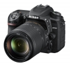

器材库 > APS及其以下画幅可换镜头数码相机 > D7500

规格总览
产品类型
APS画幅可换镜头数码相机
发布日期
2017-04-12
影像规格
影像传感器
CMOS
影像传感器尺寸
23.5×15.7mm
总像素
2151万
有效像素
2088万
影像处理器
EXPEED 5
静态图像格式
JPEG, NEF(RAW), NEF(RAW)+JPEG
静态图像尺寸
5568×3712, 4176×2784, 2784×1856
短片格式
MOV, MP4
短片尺寸
3840×2160（4K超高清）；30p（逐行），25p，24p1920×1080；60p，50p，30p，25p，24p1280×720；60p，50p
音频格式
线性PCM，AAC
除尘系统
清洁影像传感器
镜头和对焦
镜头卡口
Nikon F
兼容镜头
兼容AF尼克尔镜头，包括G型、E型和D型镜头（PC镜头受到某些限制）、AI-P 尼克尔镜头以及非CPU AI镜头（仅限M模式）；不能使用IX尼克尔镜头、用于F3AF 的镜头以及非AI 镜头。
对焦系统类型
Multi-CAM 3500 II
对焦点
51个（包括15个十字型感应器和1个支持f/8的感应器）
焦点锁定
半按快门释放按钮（单次伺服AF）或按下AE-L/AF-L按钮可锁定对焦
AF辅助灯/光
有
手动对焦
支持
曝光控制
测光系统
使用约180000像素RGB 感应器的TTL曝光测光
测光模式
中央重点测光, 点测光, 矩阵测光, 亮部重点测光
曝光模式
自动模式（自动；自动（闪光灯关闭））；场景模式；特殊效果模式；带有柔性程序的程序自动（P）；快门优先自动（S）；光圈优先自动（A）；手动（M）；U1（用户设定1）；U2（用户设定2）
场景模式
人像；风景；儿童照；运动；微距；夜间人像；夜景；宴会/室内；海滩/雪景；日落；黄昏/黎明；宠物像；烛光；花；秋色；食物
创意滤镜
夜视；特别鲜艳；流行；照片说明；玩具照相机效果；模型效果；特别鲜艳；流行；照片说明；玩具照相机效果；模型效果；可选颜色；剪影；高色调；低色调
快门类型
电子控制，纵走式，焦平面快门
快门速度
1/8000-30秒（以1/3或1/2EV为步长进行微调）、B门、遥控B门、X250
闪光同步速度
X=1/250秒；在1/320秒或以下速度时，与快门保持同步（速度为1/250秒至1/320秒之间时闪光范围缩小）
曝光补偿
±5EV以1/3或1/2EV级调整
ISO感光度
以1/3或1/2EV为步长在ISO 100-51200 之间进行微调；可在ISO 100的基础上约减少0.3、0.5、0.7 或1EV（相当于ISO 50），或者在ISO 51200的基础上约增加0.3、0.5、0.7、1、2、3、4或5EV（相当于ISO 1640000）；自动ISO 感光度控制可用
白平衡
自动（2种类型）、白炽灯、荧光灯（7 种类型）、晴天、闪光灯、阴天、背阴、手动预设（最多可保存6个值，点白平衡测量在即时取景过程中可用）、选择色温（2500K-10000K），全部都可进行微调
自拍
2秒、5秒、10秒、20秒；以0.5、1、2 或3秒为间隔曝光1-9次
连拍
约8幅/秒
闪光灯
内置闪光灯
弹出式
闪光模式
自动、自动带防红眼、自动慢同步、自动慢同步带防红眼、补充闪光、防红眼、慢同步、慢同步带防红眼、后帘慢同步、后帘同步、关闭；支持自动FP高速同步
闪光指数
约12
闪光补偿
-3 至 +1EV以1/3或1/2EV级调整
取景器/显示屏
取景器
眼平五棱取景器
取景范围
100%
取景放大倍率
约0.94倍
屈光度调节范围
-2至+1m{-1}
对焦屏
B 型光亮磨砂对焦屏Mark II，带有AF区域框（可显示取景网格）
反光镜
即时返回型
LCD尺寸
3.2英寸
LCD像素
约92.2万
视野率
约100%
LCD特性
触摸屏, 翻转屏
文件输入/输出
存储卡
SD/SDHC, SDXC
数据接口
高速USB
视频/音频接口
C型HDMI接口
无线功能
Wi-Fi, 蓝牙
电源
电池
一块EN-EL15a 锂离子电池组
机身规格
颜色
黑色
尺寸
135.5×104×72.5mm
重量
仅机身约640g / 含电池和存储卡约720g
其它
工作温度
0 - 40℃
工作湿度
85%
附件
锂离子电池组 EN- EL15a、电池充电器 MH-25a、USB线UC-E20、照相机背带AN-DC3 BK、机身盖 BF-1B、接目镜盖DK-5、橡胶眼杯DK-28
shengxcx2018-09-08 21:274.38 分
操作性 5.00功能性 4.50美观性 4.00趣味性 4.50耐用性 4.00性价比 4.00解像力 4.50色彩还原 4.50
产品图 / 样片
D7500
评测 / 相关文章
- 详细内容 （存档）
- DX格式次旗舰 尼康D7500评测 （存档）
- ［资讯］DXO给出D7500测试得分 （存档）
- ［试用］尼康D7500实拍样张 （存档）
- ［行情］尼康D7500国内开始预订 （存档）
- ［资讯］全是干货 尼康D7500交流会访谈 （存档）
- ［资讯］尼康D7500官方样片欣赏 （存档）
- ［行情］尼康D7500预售价格曝光 （存档）
相关文章
- ［资讯］DPReview公布2017年年度相机 （存档）
- ［行情］尼康D7500最新低价 （原站已下线）
- ［资讯］DXO给出D7500测试得分 （存档）
- ［试用］DX格式次旗舰 尼康D7500评测 （存档）
- ［试用］尼康D7500实拍样张 （存档）
- ［行情］尼康D7500国内开始预订 （存档）
- ［资讯］全是干货 尼康D7500交流会访谈 （存档）
- ［资讯］尼康发布数码单反相机D7500 （存档）
- ［资讯］尼康D7500官方样片欣赏 （存档）
- ［行情］尼康D7500预售价格曝光 （存档）
- ［资讯］尼康多款数码单反固件更新 （存档）